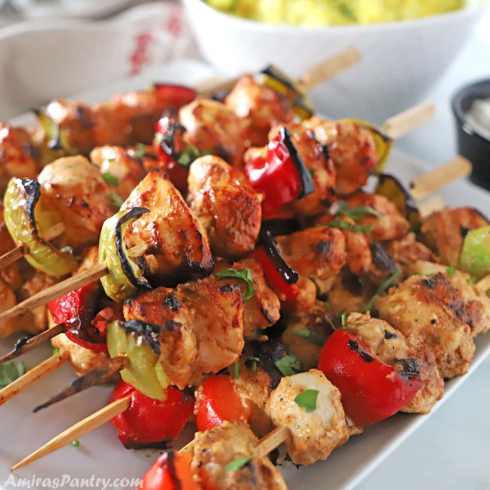

Main Menu
Chicken Shish Tawook

Shish Taouk is a kid friendly chicken dinner that is delicious oven baked or grilled.
Ingredients
- Vinegar
- garlic
- Cgichen Breast
- Yellow Mustard
- 7-Spice Blend
- onion Powder
- Black Pepper
- salt
- Sugar
- Olive Oil
- Lemon Juice
- Yogurt
Preparation
- In a medium bowl, mix yogurt with all the marinade ingredients well.
- Add the chicken pieces.
- Coat the chicken well with the marinade, cover bowl, and refrigerate for a couple of hours.
- Thread the chicken into wooden or metal skewers and grill on an outdoor grill / indoor grill pan or bake in the oven. Serve with a squeeze of lemon juice.
Main Menu